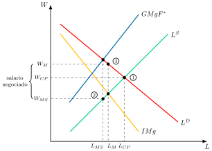

Apuntes para la oposición al Cuerpo de Diplomados Comerciales del Estado
11 Teorías microeconómicas del mercado de trabajo (I). La teoría neoclásica del mercado de trabajo. Análisis intertemporal de la oferta de trabajo. Teoría del capital humano.
11.1 Introducción  1'
1'
El mercado de trabajo es un componente fundamental de la economía, pues influye directamente en el bienestar de las familias y en la productividad de un país. Aunque en teoría debería ajustarse de manera fluida, la realidad hace que nos formulemos una serie de cuestiones:
¿Por qué trabajamos las horas que trabajamos y no más?
¿Por qué trabajamos más en unas etapas de la vida que en otras?
¿Por qué cobra más quien ha estudiado más?
Responder a estas preguntas exige analizar las decisiones de quienes ofrecen y demandan trabajo. Por consiguiente, el objetivo de la exposición será el análisis del mercado de trabajo desde una óptica microeconómica a través del siguiente esquema:
La teoría neoclásica del mercado de trabajo, como punto de partida del análisis, y qué cambia cuando existe competencia imperfecta.
El análisis intertemporal de la oferta de trabajo, que explica cómo se reparte el trabajo a lo largo de la vida y del ciclo económico.
La teoría del capital humano, que explica por qué los salarios difieren entre trabajadores.
11.2 La teoría neoclásica del mercado de trabajo 10'
La teoría neoclásica analiza el mercado de trabajo de forma análoga al mercado de cualquier otro bien, por lo que el nivel de empleo, que es la cantidad, y el salario, que es el precio, quedan determinados por la interacción entre oferta y demanda. Esta visión, que Hicks (1932) sistematizó a partir de la teoría de la productividad marginal, sigue siendo el punto de referencia frente al que se miden las imperfecciones del mercado de trabajo.
Supuestos
La teoría neoclásica parte de los siguientes supuestos:
Competencia perfecta en el mercado de bienes y de factores productivos.
Plena flexibilidad de precios y salarios.
Perfecta movilidad del trabajo.
Homogeneidad del factor trabajo.
Información perfecta.
Ausencia de externalidades.
Racionalidad: los individuos maximizan su utilidad y las empresas, su beneficio.
De estos supuestos se deriva, como se verá, un equilibrio único, estable y eficiente, sin desempleo involuntario. Para llegar a él se estudian primero la oferta de trabajo, que nace de las decisiones de los individuos, y después la demanda, que nace de las decisiones de las empresas.
Oferta de trabajo
La oferta de trabajo es el número de horas que un individuo está dispuesto a trabajar a cada salario. Se deriva de la maximización de su utilidad, en la que elige entre consumo y ocio sujeto a una restricción presupuestaria y a otra temporal.1
El problema al que se enfrenta el trabajador es la maximización de la utilidad que le reportan el consumo, \(C\), y el ocio, \(O\):
\[\max_{C,O}\;U\left(C,O\right)\] sujeto a dos restricciones.2 La presupuestaria exige que el gasto en consumo, valorado al precio del bien, \(P_{C}\), no supere la suma de la renta no salarial, \(M\), y de la renta salarial, que es el salario nominal, \(W\), multiplicado por las horas trabajadas, \(L\). La temporal reparte la dotación de tiempo total, \(\bar{L}\), entre ocio y trabajo: \[\begin{align*} P_{C}\cdot C & \leq M+W\left(\bar{L}-O\right)\\ O+L & =\bar{L} \end{align*}\] Como cada hora de ocio supone renunciar al salario que se habría ganado con ella, el salario real, \(w=W/P_{C}\), es el coste de oportunidad del ocio, es decir, su precio.
Las condiciones de primer orden, CPO, del problema establecen que el trabajador ofrecerá trabajo hasta que la relación marginal de sustitución entre ocio y consumo, \(RMS_{O,C}\), es decir, el consumo al que está dispuesto a renunciar por una hora más de ocio, se iguale al salario real, \(w\): \[RMS_{O,C}=\dfrac{UMg_{O}}{UMg_{C}}=\dfrac{W}{P_{C}}=w\] Así, el equilibrio se produce allí donde la tasa a la que el individuo intercambia internamente ocio por consumo se iguala a la tasa objetiva a la que lo hace el mercado.
Para obtener la oferta de trabajo individual, \(L^{S}\), se realiza un ejercicio de estática comparativa con el salario real, \(w\), en el que hay que distinguir el efecto sustitución del efecto renta.
Gráficamente, en un plano de ocio, \(O\), en el eje horizontal y consumo, \(C\), en el vertical, como el de la Figura 11.1, se representan la restricción, que es a la vez presupuestaria y temporal, y las curvas de indiferencia, que recogen las combinaciones de ocio y consumo que generan el mismo nivel de utilidad. Así:

El equilibrio inicial, \(E_{0}\), está en el punto de tangencia entre la restricción y la curva de indiferencia más alejada del origen.3
Al subir el salario real, la restricción pivota sobre el punto de dotación, en el que no se trabaja, y el nuevo equilibrio, \(E_{1}\), se sitúa sobre una curva de indiferencia más alta.
Para separar los dos efectos se aplica la variación compensatoria en el sentido de Hicks: la nueva restricción se desplaza hasta que es tangente a la curva de indiferencia inicial, en el punto \(S\).
Efecto sustitución, de \(E_{0}\) a \(S\), que siempre reduce el ocio: al aumentar el salario aumenta el coste de oportunidad del ocio, por lo que disminuyen las horas de ocio, \(\downarrow O\), y aumenta la oferta de trabajo, \(\uparrow L^{S}\).
Efecto renta, de \(S\) a \(E_{1}\): al aumentar el salario aumenta la renta salarial, \(W\left(\bar{L}-O\right)\), y con ella el consumo de todos los bienes normales, entre ellos el ocio, \(\uparrow O\), lo que reduce la oferta de trabajo, \(\downarrow L^{S}\).4
Por lo tanto, si el ocio es un bien normal, el efecto renta y el efecto sustitución tienen signos contrarios y la pendiente de la oferta de trabajo depende de la cuantía relativa de ambos.5
Ya Robbins (1930) mostró que el efecto de una subida salarial sobre las horas trabajadas es teóricamente ambiguo, porque depende de la elasticidad de la demanda de renta en términos de esfuerzo: si es inferior a la unidad, el individuo responde a un salario más alto trabajando menos, y la curva de oferta se vuelve hacia atrás.6 En el plano empírico, Ragnar Frisch (1932) dedujo, a partir de sus estimaciones de la utilidad marginal de la renta, una oferta de trabajo en forma de “S” invertida: decreciente en un primer tramo, creciente en un segundo y, según conjeturaba el propio Frisch, de nuevo decreciente en un tercero.7
Por norma general, y para el resto del análisis, se supondrá que el individuo participa en el mercado de trabajo y que su oferta tiene pendiente creciente, lo que exige que:
El salario de equilibrio sea mayor que el salario de reserva, que es el salario más bajo por el que un trabajador está dispuesto a aceptar un trabajo.8
Si el ocio es un bien normal, como es lo habitual, el efecto sustitución sea mayor que el efecto renta en valor absoluto: \(\left|ES\right|>\left|ER\right|\).
Gráficamente, en un plano de horas trabajadas, \(L\), y salario real, \(w\), como el de la Figura 11.2, se representa la oferta de trabajo individual, \(L^{S}\).9 En ella:

Por debajo del salario de reserva, \(w_{R}\), el individuo no trabaja, y a partir de él empieza a ofrecer horas.
Entre \(w_{R}\) y \(w^{\prime}\) domina el efecto sustitución y la oferta es creciente.
Por encima de \(w^{\prime}\) domina el efecto renta y la curva se vuelve hacia atrás.
En general, se acepta que el tramo relevante de la oferta de trabajo individual es el creciente. La oferta de trabajo de mercado se obtiene por agregación horizontal de las ofertas individuales y responde al salario por dos vías: el margen intensivo, es decir, las horas de quienes ya trabajan, y el margen extensivo, es decir, la entrada en el mercado de quienes, al subir el salario, ven superado su salario de reserva.10
La incorporación de la mujer al mercado de trabajo ilustra la importancia del margen extensivo. En España, la tasa de actividad de las mujeres pasó del 42,7 % en el segundo trimestre de 2002 al 54,6 % en el de 2026, mientras la de los hombres bajaba del 66,9 % al 64,2 %, de modo que la brecha se redujo de 24 a menos de 10 puntos (INE 2026). Goldin (2006) la describe como una “revolución silenciosa”: desde finales de los años setenta, las mujeres pasaron de ser trabajadoras secundarias, que entraban y salían del mercado según las necesidades del hogar, a planificar carreras profesionales propias, con más formación y mayor apego al empleo. Su efecto sobre el producto a largo plazo es, sin embargo, ambiguo: Evans (2026) sostiene que la incorporación de la mujer al trabajo productivo eleva el PIB, pero que, si los hombres no aceptan relaciones más igualitarias, la caída de la fecundidad puede frenar el crecimiento.11
Respecto a la empresa, en un mercado de factores perfectamente competitivo puede contratar tantos trabajadores como desee al salario de mercado, de modo que la oferta de trabajo a la que se enfrenta es perfectamente elástica a ese salario, como se observa en la Figura 11.3.

Demanda de trabajo
La demanda de trabajo es una demanda derivada, es decir, la empresa demanda trabajo porque hay demanda del bien que este ayuda a producir, y varía con ella. Por ello, se obtiene del proceso optimizador de la empresa, que maximiza sus beneficios sujeta a una restricción tecnológica, como se vio en los Temas 5 y 6.12
Corto plazo
A corto plazo, la dotación de algún factor de producción es fija. Se supondrá que el factor fijo es el capital, \(\bar{K}\), por lo que el productor maximiza solo respecto al trabajo. Además, al haber competencia perfecta en todos los mercados, la empresa es precio-aceptante: el precio del bien, \(P\), y el salario nominal, \(W\), son exógenos.
El programa de optimización será el siguiente: \[\max\quad\pi=P\cdot F\left(\bar{K},L\right)-R\cdot\bar{K}-W\cdot L \tag{11.1}\] donde \(K\) y \(L\) son los factores productivos utilizados (imperfectamente sustitutivos), y \(R\) y \(W\), sus precios nominales.
De acuerdo con la CPO, la empresa demandará trabajo hasta que su productividad marginal se iguale al salario real o, lo que es lo mismo, hasta que el valor de la productividad marginal, \(P\cdot PMg_{L}\), es decir, el ingreso que genera un trabajador adicional, se iguale al salario nominal: \[P\cdot PMg_{L}=W\;\Rightarrow\;PMg_{L}=w\]
Gráficamente, en un plano de trabajo, \(L\), y salario nominal, \(W\), como el de la Figura 11.4, se representa la curva del valor de la productividad marginal, \(P\cdot PMg_{L}\). Así:

Como la productividad marginal del trabajo es decreciente, la empresa solo contratará más trabajadores si el salario baja.
La curva \(P\cdot PMg_{L}\) es, por tanto, la demanda de trabajo a corto plazo de la empresa, y tiene pendiente negativa.
Por su parte, la condición de segundo orden, CSO, se cumple porque la productividad marginal del trabajo es decreciente.
Largo plazo
A largo plazo, la dotación de todos los factores es variable, por lo que ahora el productor maximiza respecto al trabajo y al capital.13
Las CPO establecen que:
Minimización de costes: en el largo plazo la empresa minimiza costes para cada nivel de producción, es decir, elige su tamaño de planta óptimo, intercambiando factores hasta que su relación marginal de sustitución técnica, \(RMST\), se iguala a la tasa a la que puede hacerlo en el mercado, que es la pendiente de la isocoste, \(W/R\): \[RMST=\dfrac{PMg_{L}}{PMg_{K}}=\dfrac{W}{R}\]
Maximización de beneficios: señala que la empresa contratará factores productivos hasta que sus productividades marginales sean iguales a sus costes reales (o, de igual manera, hasta que los valores de sus productividades marginales sean iguales a sus costes nominales) \[\begin{aligned} PMg_{L}=w\\ PMg_{K}=r \end{aligned} \tag{11.2}\] Estas son las condiciones del óptimo a largo plazo, en las que \(w=W/P\) es el salario real y \(r=R/P\) el coste real del capital, distinto del tipo de interés real que aparecerá en el análisis intertemporal.14
La CSO se cumple si la función de producción es estrictamente cóncava, lo que implica rendimientos a escala decrecientes.15
Ahora se observa cómo, en el largo plazo, la demanda de un factor depende no solo de su productividad y de su coste, sino también de la productividad y del coste del otro factor.
Gráficamente, en un plano de trabajo, \(L\), y salario nominal, \(W\), como el de la Figura 11.5, se representan la demanda de trabajo a corto plazo inicial, \(L^{D}_{cp}\), la que resulta tras ajustarse el capital, \(L^{D\prime}_{cp}\), y la demanda a largo plazo, \(L^{D}_{lp}\). Ante una caída del salario:
Como se ha visto, la curva del valor de la productividad marginal (\(P\cdot PMg_{L}\)) describe la demanda de trabajo cuando el nivel de capital es fijo.
Si el salario disminuye de \(W_{0}\) a \(W_{1}\), se demanda más trabajo para que se cumpla \(\downarrow W=P\cdot\downarrow PMg_{L}\), y se pasa del punto A al B.
El aumento del trabajo aumenta la \(PMg_{K}\), por lo que, ahora que el capital es variable, se demanda también más capital para que disminuya la \(PMg_{K}\) y se pueda cumplir \(R=P\cdot PMg_{K}\).
Al demandarse más capital, la \(PMg_{L}\) aumenta y, por tanto, la curva de demanda de trabajo a corto plazo se desplaza a la derecha y el equilibrio pasa al punto C. La demanda a largo plazo, \(L^{D}_{lp}\), une A y C, y el aumento del empleo es mayor que en el corto plazo, \(\Delta L_{lp}>\Delta L_{cp}\).

Del proceso anterior se extraen tres conclusiones:
Una disminución del salario aumenta la demanda de trabajo y de capital, \(\downarrow W\Rightarrow\uparrow L,\uparrow K\).16
La demanda individual en el largo plazo ya no coincide con la curva de \(P\cdot PMg_{L}\).
La demanda individual a largo plazo es más elástica que la de corto plazo, precisamente por la mayor flexibilidad de la empresa para combinar los factores, lo que se conoce como teorema de Le Chatelier-Samuelson.
La elasticidad de la demanda de trabajo depende, según las reglas de Marshall que formalizó Hicks (1932), de cuatro factores. Es mayor cuanto más fácil es sustituir trabajo por otros factores, cuanto más elástica es la demanda del bien que se produce, cuanto mayor es el peso del trabajo en los costes totales, siempre que la demanda del bien sea más elástica que la sustitución entre factores, y cuanto más elástica es la oferta de los demás factores (Borjas 2016, cap. 3). En la práctica, Hamermesh (1993), a partir de más de setenta estudios, sitúa la elasticidad de la demanda de trabajo a producción constante entre 0,15 y 0,75 en valor absoluto, con 0,3 como valor más probable. Si se incluye el efecto escala, se acerca a la unidad (Cahuc et al. 2014, 117). De estas reglas depende, por ejemplo, cuánto empleo se pierde cuando se encarece el trabajo con una subida de las cotizaciones sociales.
Demanda agregada
El análisis de la demanda agregada se realiza en el corto plazo por simplicidad.
A diferencia de la oferta, la demanda de trabajo agregada no es la suma horizontal de las demandas individuales. Cuando cambia el salario, varía la demanda de trabajo de las empresas y, con ella, la producción agregada y el precio del producto. Cada empresa, al contratar y producir más, hace bajar el precio del bien para todas las demás sin tenerlo en cuenta. Este efecto, que se transmite a través de los precios, se denomina externalidad pecuniaria.
Gráficamente, en un plano de trabajo, \(L\), y salario nominal, \(W\), como el de la Figura 11.6, se representan el valor de la productividad marginal antes y después de la caída del precio del bien, \(P\cdot PMg_{L}\) y \(P^{\prime}\cdot PMg_{L}\), y la demanda agregada de trabajo, \(L^{D}\), que une \(A\) y \(C\). Así:

Ante una disminución del salario de \(W_{0}\) a \(W_{1}\), las empresas contratarán más trabajadores y producirán más, lo que desplazará a la derecha la curva de oferta de mercado del bien y reducirá su precio de \(P\) a \(P^{\prime}\).
A causa de dicha reducción, el valor de la productividad marginal se desplaza a la izquierda, de \(P\cdot PMg_{L}\) a \(P^{\prime}\cdot PMg_{L}\), por lo que se pasa de \(A\) a \(C\) en lugar de \(A\) a \(B\).
Por tanto, para obtener la demanda de trabajo de una industria deben agregarse las cantidades que demandaría cada empresa teniendo en cuenta el cambio del precio del bien al variar el salario, es decir, las cuasidemandas.
Esto hace que la demanda agregada de trabajo sea más inelástica que la que se obtendría si no variase el precio del bien. Ello se debe a que, al reducirse el salario, también cae el precio del bien, por lo que las empresas tienen menos incentivos a contratar más trabajadores.
Equilibrio
Halladas las curvas de oferta y demanda agregadas de trabajo, el equilibrio neoclásico, es decir, el salario y el nivel de empleo, se produce en la intersección de ambas curvas, como se observa en la Figura 11.7.

Se da, pues, un equilibrio único, estable y eficiente, en el que los salarios reales se igualan a la productividad marginal del trabajo y el mercado se vacía de manera instantánea. No hay desempleo involuntario, aunque sí puede haber desempleo voluntario, y la flexibilidad del salario es el mecanismo autocorrector que asegura el ajuste automático. La implicación de política es clara: el mercado no necesita intervención, y cualquier rigidez que impida bajar el salario, como un salario mínimo por encima del de equilibrio, solo puede generar paro.
Sin embargo, estas conclusiones no se ajustan a la evidencia empírica, en la que no hay ni pleno empleo ni ajuste automático. Por ello, a continuación se relaja el supuesto de competencia perfecta.
Competencia imperfecta en los mercados de bienes y de trabajo
Cuando existe competencia imperfecta, los resultados difieren de los obtenidos en un entorno competitivo. Se estudia primero qué ocurre cuando el poder de mercado lo tiene la empresa, como monopolista en el mercado del bien o como monopsonista en el de trabajo, y después cuando lo tienen los trabajadores organizados en un sindicato.
Poder de mercado de la empresa: monopolio y monopsonio
Un monopsonio es un mercado con un único comprador. En el de trabajo, la empresa monopsonista es la única demandante de trabajo y se enfrenta, por ello, a toda la curva de oferta del mercado, que es creciente, en lugar de tomar el salario como dado, como ya se vio en el Tema 8.17 Puede ocurrir porque la empresa sea la única de la zona, porque esté muy especializada o porque todas las empresas se hayan agrupado en una patronal que lidera las negociaciones con los trabajadores.
Además, hay que distinguir si la empresa tiene también poder de monopolio en el mercado de bienes, porque la demanda de trabajo es una demanda derivada que depende de su oferta de producto. De ahí que los resultados del monopsonista varíen según sea o no monopolista en el mercado del bien.
Se analiza la demanda de trabajo a corto plazo, con la función de producción \(F\left(\bar{K},L\right)\). La empresa contrata trabajadores hasta que lo que aporta el último se iguala a lo que cuesta:
Ingreso marginal del factor, \(IMgF\): es la variación del ingreso al contratar una unidad adicional de factor, es decir, el ingreso marginal del bien por la productividad marginal del trabajo, lo que en el Tema 8 se denomina ingreso del producto marginal.
Gasto marginal del factor, \(GMgF\): es la variación del coste al contratar una unidad adicional de factor.
En la condición de primer orden intervienen la elasticidad-precio de la demanda del bien, \(\varepsilon_{Q^{D},P}\), y la elasticidad de la oferta de trabajo respecto al salario, \(\varepsilon_{L^{S},W}\): \[P\cdot PMg_{L}\left(1-\dfrac{1}{\left|\varepsilon_{Q^{D},P}\right|}\right)=W\left(1+\dfrac{1}{\left|\varepsilon_{L^{S},W}\right|}\right)\]
El lado izquierdo es el \(IMgF\) y el derecho, el \(GMgF\). Cada uno cambia según haya o no poder de mercado:
En el mercado del bien: con competencia perfecta, \(\varepsilon_{Q^{D},P}=\infty\), y el \(IMgF\) es el valor de la productividad marginal, \(P\cdot PMg_{L}\). Con poder de monopolio es menor, porque para vender más la empresa tiene que bajar el precio de todas las unidades: \[IMgF^{*}=P\cdot PMg_{L}\left(1-\dfrac{1}{\left|\varepsilon_{Q^{D},P}\right|}\right)<P\cdot PMg_{L}\]
En el mercado de trabajo: con competencia perfecta, \(\varepsilon_{L^{S},W}=\infty\), y el \(GMgF\) es el salario. Con poder de monopsonio es mayor, porque para contratar a un trabajador más tiene que subir el salario a todos los que ya emplea: \[GMgF^{*}=W\left(1+\dfrac{1}{\left|\varepsilon_{L^{S},W}\right|}\right)>W\]
La oferta de trabajo, que indica lo mínimo que hay que pagar para atraer a cada número de trabajadores, es la curva de gasto medio, y el salario se lee siempre sobre ella.
Gráficamente, en un plano de trabajo, \(L\), y salario nominal, \(W\), como el de la Figura 11.8, se representan el ingreso marginal del factor en competencia, \(IMgF\), igual a \(P\cdot PMg_{L}\), y con poder de monopolio, \(IMgF^{*}\), la oferta de trabajo, \(L^{S}\), y el gasto marginal del factor con poder de monopsonio, \(GMgF^{*}\). En ella se distinguen cuatro casos:

Competencia en ambos mercados, punto 1: cada empresa toma como dados el precio y el salario, y el salario y el empleo de mercado, \(W_{1}\) y \(L_{1}\), se determinan donde la demanda de trabajo, \(IMgF\), corta a la oferta, \(L^{S}\).
Monopolio en bienes y competencia en trabajo, punto 2: la demanda de trabajo pasa a ser \(IMgF^{*}\) y corta a la oferta en el punto 2. Como la oferta de mercado es creciente, cae el empleo, a \(L_{2}\), y también el salario, a \(W_{2}\) (Koutsoyiannis 1979, 456-57). Si fuera horizontal, solo caería el empleo.
Competencia en bienes y monopsonio en trabajo, punto 3: la empresa contrata donde \(IMgF\) corta a \(GMgF^{*}\), con el empleo \(L_{3}\), y paga el salario \(W_{3}\), que se lee sobre la oferta, por debajo del punto 3.
Monopolio y monopsonio, punto 4: la empresa contrata donde \(IMgF^{*}\) corta a \(GMgF^{*}\), con el empleo \(L_{4}\), y paga el salario \(W_{4}\), que se lee sobre la oferta, por debajo del punto 4.
Joan Robinson llama explotación a la diferencia entre el valor de la productividad marginal del trabajo y el salario.18 Tiene dos componentes. La explotación de monopolio es la diferencia entre \(P\cdot PMg_{L}\) y el \(IMgF^{*}\), y aparece en los puntos 2 y 4. La explotación de monopsonio es la diferencia entre el ingreso marginal del factor, igual en el óptimo al gasto marginal, y el salario pagado, y aparece en los puntos 3 y 4. Los cuatro casos se resumen en la Tabla 11.1.
| Mercado de producto | Equilibrio | Mercado del factor \(L\) | |
|---|---|---|---|
| 1 | Precio-aceptante | \(IMgF=W\) | Precio-aceptante |
| 2 | Monopolista en el bien | \(IMgF^{*}=W\) | Precio-aceptante |
| 3 | Precio-aceptante | \(IMgF=W\left(1+\dfrac{1}{\left|\varepsilon_{L^{S},W}\right|}\right)\) | Monopsonista en \(L\) |
| 4 | Monopolista en el bien | \(IMgF^{*}=W\left(1+\dfrac{1}{\left|\varepsilon_{L^{S},W}\right|}\right)\) | Monopsonista en \(L\) |
En suma, con competencia perfecta en ambos mercados, el salario y el nivel de empleo son los más altos, en el punto 1, mientras que con la empresa ostentando poder de mercado en ambos mercados, en el punto 4, el salario y el nivel de empleo son los más bajos. No hay, sin embargo, paro involuntario, porque el salario se fija sobre la curva de oferta y todos los que desean trabajar a ese salario encuentran empleo. El empleo es bajo porque muchos prefieren no trabajar por un salario tan reducido. Cuando la empresa es solo monopolista o solo monopsonista, los resultados se encuentran entre ambos extremos, sin que pueda decirse con carácter general cuál de los dos casos da lugar a más empleo.
La principal implicación de política del monopsonio se refiere al salario mínimo, que, fijado entre el salario de monopsonio, \(W_{3}\), y el competitivo, \(W_{1}\), puede elevar a la vez el salario y el empleo.19 El ejemplo más conocido es el de Card y Krueger (1994), que compararon los restaurantes de comida rápida de Nueva Jersey, que subió su salario mínimo en 1992, con los de la vecina Pensilvania, que no lo hizo, y no hallaron una caída del empleo, resultado difícil de explicar en competencia perfecta pero compatible con el monopsonio (Manning 2003).20
Poder de monopolio de los trabajadores: el sindicato
Cuando son los trabajadores quienes tienen poder en la oferta de trabajo, el resultado es el simétrico del monopsonio. El trabajador es el único oferente de trabajo porque está muy especializado o, sobre todo, porque los trabajadores se agrupan en un sindicato que negocia con las empresas, algo que se viene observando en las economías desarrolladas desde el siglo XIX.
La función de utilidad del sindicato depende positivamente del salario y del nivel de empleo, es decir, de la masa salarial, \(W\left(L\right)\cdot L\), donde \(W\left(L\right)\) es el salario que la demanda de trabajo permite cobrar con el empleo \(L\), y negativamente de la desutilidad asociada al trabajo, \(C\left(L\right)\): \[U=W\left(L\right)\cdot L-C\left(L\right)\] De su CPO se obtiene que el sindicato iguala su ingreso marginal, \(IMg\), al coste marginal del trabajo, \(CMg_{L}\), en una condición en la que interviene la elasticidad de la demanda de trabajo respecto al salario, \(\varepsilon_{L^{D},W}\): \[IMg=W\left(1-\dfrac{1}{\left|\varepsilon_{L^{D},W}\right|}\right)=CMg_{L}\]
Gráficamente, en un plano de trabajo, \(L\), y salario nominal, \(W\), como el de la Figura 11.9, se representan la demanda de trabajo, \(L^{D}\), el ingreso marginal del sindicato, \(IMg\), y la oferta de trabajo, \(L^{S}\). Así:

La curva de ingreso marginal está por debajo de la de demanda porque, al tener el sindicato poder de monopolio, un aumento de su oferta reduce el salario de todas las unidades, \(IMg<W\).
El coste marginal del trabajo, \(CMg_{L}\), es la propia curva de oferta, \(L^{S}\), que recoge la desutilidad marginal de trabajar.
El sindicato elige el empleo \(L_{M}\), donde \(IMg\) corta a \(L^{S}\), y fija el salario \(W_{M}\), que se lee sobre la curva de demanda, frente al empleo \(L_{CP}\) y el salario \(W_{CP}\) del equilibrio competitivo.
En suma, con un sindicato con poder de monopolio en el mercado de trabajo, el nivel de empleo es inferior y el salario mayor que en competencia perfecta, por lo que se produce paro involuntario: a ese salario hay trabajadores que desearían trabajar y no encuentran empleo. El resultado depende, además, del objetivo del sindicato. Si maximiza el empleo, el equilibrio es el competitivo. Si maximiza la masa salarial, fija el salario en el que su ingreso marginal es nulo, siempre que a ese salario haya trabajadores suficientes dispuestos a trabajar. Si maximiza, en cambio, la renta neta de sus afiliados, como en el planteamiento anterior, iguala ingreso y coste marginales y obtiene el salario más alto y el empleo más bajo de los tres casos.
Así, cuanto mayor es el poder de mercado, ya sea de la empresa o del sindicato, menor es el empleo. La diferencia está en el paro: con monopsonio no hay paro involuntario, porque el salario se lee sobre la oferta, y con sindicato sí, porque el salario supera al competitivo.
Cuando un sindicato con poder de monopolio se enfrenta a una empresa monopsonista se tiene un monopolio bilateral, ya presentado en el Tema 8. El resultado queda indeterminado: el salario se sitúa entre el que fijaría el monopsonista y el que pediría el sindicato, según el poder de negociación de cada parte, que formaliza la solución de Nash generalizada que se estudia en el Tema 12. Es el único caso en el que el análisis neoclásico justifica el sindicato, como poder compensador del monopsonio, porque puede acercar el salario y el empleo a los competitivos.21
Todo el análisis anterior es estático: el individuo decide cuántas horas trabaja en un único período, y el trabajo se supone homogéneo. Los dos bloques siguientes levantan sucesivamente estos dos supuestos.
11.3 Análisis intertemporal de la oferta de trabajo 4'30"
El modelo estático trata cada período como si fuera independiente de los demás, pero las decisiones de trabajo se toman a lo largo de toda la vida. El análisis intertemporal considera que el individuo reparte su consumo y su ocio entre períodos, lo que permite explicar cómo varía la oferta de trabajo a lo largo del ciclo vital y cómo responde a los cambios transitorios del salario, que en los modelos del ciclo real constituyen el mecanismo de propagación de los shocks.
La oferta de trabajo a lo largo del ciclo vital
El salario sigue con la edad un perfil creciente y cóncavo: es bajo al comienzo de la vida laboral, aumenta con la experiencia hasta alcanzar un máximo hacia los cincuenta años y después se estanca o cae ligeramente. Las horas trabajadas siguen un perfil parecido (Borjas 2016, 65).
La teoría del ciclo vital explica esta coincidencia. Como el individuo conoce de antemano la senda de su salario, esos cambios previstos no alteran su riqueza a lo largo de la vida, que ya los incorporaba, y solo cambian el precio del ocio en cada momento. Por eso concentrará sus horas de trabajo en los años en que el salario es más alto, que es cuando el ocio es más caro, y suavizará su consumo ahorrando o endeudándose. A diferencia del modelo estático, estos cambios del salario solo generan efecto sustitución.
La jubilación es la última decisión de oferta de trabajo del ciclo vital y también se analiza de forma intertemporal. En el modelo de valor de opción de Stock y Wise (1990), seguir trabajando conserva la opción de jubilarse más adelante en mejores condiciones, y el trabajador se jubila cuando el valor de esa opción deja de ser positivo. Las reglas de las pensiones alteran así la oferta de trabajo de los mayores. En los países de la OCDE, la penalización implícita que los sistemas de pensiones imponen a seguir trabajando explica en torno al 80 % de las diferencias entre países en la inactividad de los trabajadores de 55 a 65 años (Gruber y Wise 1999, 30-31).
La sustitución intertemporal: Lucas y Rapping (1969)
Lucas y Rapping (1969) fueron los primeros en tratar la oferta de trabajo como una decisión intertemporal, para explicar por qué el empleo fluctúa mucho a lo largo del ciclo mientras el salario real lo hace poco.22 El modelo se basa en los siguientes supuestos:
El individuo vive dos períodos.
No dispone de riqueza inicial, es decir, todas sus rentas son salariales.
Los mercados de capitales son perfectos, es decir, puede transferir fondos de un período a otro al tipo de interés real, \(r\).
La función de utilidad es aditivamente separable en el tiempo y también entre consumo y ocio.
La dotación de tiempo de cada período se normaliza a la unidad, \(O_{t}+L_{t}=\bar{L}=1\).
Con el consumo de cada período, \(C_{t}\), las horas trabajadas, \(L_{t}\), el salario real, \(w_{t}\), y la tasa subjetiva de descuento, \(\rho\), que define el factor de descuento, \(\beta\), y con \(u\left(C_{t}\right)\) la utilidad del consumo y \(v\left(1-L_{t}\right)\) la del ocio, el individuo resuelve \[\max_{C_{1},C_{2},L_{1},L_{2}}\;U=u\left(C_{1}\right)+v\left(1-L_{1}\right)+\beta\left[u\left(C_{2}\right)+v\left(1-L_{2}\right)\right],\qquad\beta=\dfrac{1}{1+\rho}\] sujeto a la restricción presupuestaria intertemporal, según la cual el valor actual del consumo debe igualar al de las rentas salariales: \[C_{1}+\dfrac{C_{2}}{1+r}=w_{1}L_{1}+\dfrac{w_{2}L_{2}}{1+r}\]
De las CPO se obtienen tres condiciones.23 Son las siguientes:
Intratemporal: en cada período, la relación marginal de sustitución entre ocio y consumo se iguala al salario real, \(RMS_{O_{t},C_{t}}=v^{\prime}\left(1-L_{t}\right)/u^{\prime}\left(C_{t}\right)=w_{t}\), como en el modelo estático.
Ecuación de Euler: el consumo se reparte entre períodos hasta que \(u^{\prime}\left(C_{1}\right)=\beta\left(1+r\right)u^{\prime}\left(C_{2}\right)\).
Intertemporal del ocio, que es la novedad del modelo: \[\dfrac{v^{\prime}\left(1-L_{1}\right)}{v^{\prime}\left(1-L_{2}\right)}=\dfrac{1+r}{1+\rho}\cdot\dfrac{w_{1}}{w_{2}} \tag{11.3}\] es decir, el individuo trabajará relativamente más en el período en que el salario, corregido por el tipo de interés y la impaciencia, sea más alto.
Por tanto, la oferta de trabajo relativa depende positivamente del salario relativo y del tipo de interés, y negativamente de la tasa de descuento, que mide la impaciencia del individuo: \[\dfrac{L^{S}_{1}}{L^{S}_{2}}=f\left(\underset{(+)}{\dfrac{w_{1}}{w_{2}}},\;\underset{(+)}{r},\;\underset{(-)}{\rho}\right)\] De ahí se derivan cuatro implicaciones:
Una subida permanente del salario, que eleva en la misma proporción el de los dos períodos, no altera la oferta relativa entre períodos. Su efecto sobre el nivel de horas es el del modelo estático: los efectos sustitución y renta tienen signos contrarios y el resultado es ambiguo.
Una subida transitoria del salario en el primer período aumenta la oferta de trabajo en ese período respecto al segundo. Es la sustitución intertemporal del trabajo: se trabaja más cuando trabajar compensa más.
Una subida del tipo de interés aumenta la oferta de trabajo presente, porque trabajar y ahorrar hoy resulta más atractivo.
Una mayor impaciencia la reduce, porque el individuo prefiere disfrutar del ocio cuanto antes.
La implicación de política es que los cambios transitorios tienen efectos mucho mayores sobre el empleo que los permanentes. Una rebaja temporal de los impuestos sobre el trabajo, por ejemplo, desplaza horas hacia el período en que se aplica, mientras que una permanente apenas altera la oferta relativa.
La elasticidad de Frisch y MaCurdy (1981)
El parámetro clave del modelo es la elasticidad de Frisch, que mide la respuesta de las horas trabajadas a un cambio del salario manteniendo constante la utilidad marginal de la riqueza, \(\lambda\): \[\varepsilon^{F}=\left.\dfrac{\partial\ln L_{t}}{\partial\ln w_{t}}\right|_{\lambda\ \text{constante}}\] Recoge, por tanto, un efecto sustitución intertemporal puro, el que se produce cuando el salario cambia de forma prevista a lo largo del ciclo vital o de forma transitoria, sin alterar la riqueza de toda la vida.24 Por ejemplo, si la utilidad de cada período es \(\ln C_{t}-\varphi\,L^{1+1/\eta}_{t}/\left(1+1/\eta\right)\), donde \(\varphi\) mide el peso de la desutilidad del trabajo y \(\eta\) su curvatura, la elasticidad de Frisch es constante e igual a \(\eta\).
MaCurdy (1981) fue el primero en estimarla de forma coherente con el modelo. Utilizó datos de panel de 513 hombres casados de Estados Unidos entre 1967 y 1976 y aprovechó que el crecimiento previsto del salario a lo largo del ciclo vital no altera la riqueza: al comparar a cada individuo consigo mismo a lo largo del tiempo, el efecto de la riqueza desaparece y queda solo el de sustitución. Concluyó que una subida del 10 % del salario real debida a su crecimiento a lo largo del ciclo vital eleva las horas trabajadas entre un 1 % y un 3 %, es decir, una elasticidad de Frisch de entre 0,1 y 0,3.
Evidencia empírica y papel en el ciclo real
Buena parte de la evidencia posterior, que estima esta elasticidad con efectos fijos individuales, confirma que es positiva pero pequeña, en torno a 0,1 para los varones: las horas apenas cambian en las edades centrales aunque el salario crezca (Borjas 2016, cap. 2). El caso de los taxistas, que eligen cada día cuántas horas trabajan, ilustra el debate. Los primeros trabajos apuntaban a que dejaban de trabajar al alcanzar un objetivo de ingresos, pero la evidencia más amplia y reciente muestra que trabajan más cuando cada hora rinde más.25 Chetty et al. (2011), al revisar la evidencia cuasiexperimental, proponen valores de 0,5 en el margen intensivo y de 0,25 en el extensivo, lo que da una elasticidad de Frisch de las horas agregadas de alrededor de 0,75.
La elasticidad de Frisch es decisiva para la teoría del ciclo real. Kydland y Prescott (1982) extendieron el razonamiento de Lucas y Rapping a una economía con incertidumbre sometida a shocks reales de productividad. Ante un shock transitorio que eleva el salario real, los trabajadores sustituyen ocio presente por ocio futuro y trabajan más hoy, lo que genera la expansión y la posterior contracción. Un shock permanente, en cambio, no altera la oferta relativa entre períodos: su efecto riqueza compensa en buena parte el de sustitución, de modo que, cuanto más persistente es el shock, menos sustitución intertemporal genera. Su efecto principal se transmite a través de la inversión, por el aumento permanente de la productividad marginal del capital. La implicación de política es que, si las fluctuaciones del empleo son respuestas óptimas a shocks reales, las políticas de estabilización de la demanda no mejoran el bienestar.
Sin embargo, para reproducir las grandes fluctuaciones del empleo con salarios reales poco variables, estos modelos necesitan una elasticidad intertemporal elevada, mayor que la que estiman la mayoría de los trabajos microeconómicos, lo que ha generado un intenso debate (Borjas 2016, cap. 2). Si la sustitución intertemporal es pequeña, buena parte de las fluctuaciones del empleo no pueden ser voluntarias, y hay que acudir a las rigideces y fricciones que se estudian en el Tema 12 y, desde el punto de vista macroeconómico, en los Temas 11 y 12 de la Parte B.
Tanto el enfoque estático como el intertemporal han supuesto hasta aquí que todos los trabajadores son iguales. La teoría del capital humano levanta este supuesto con un razonamiento también intertemporal: formarse hoy tiene un coste presente a cambio de un salario más alto en el futuro.
11.4 Teoría del capital humano 4'
Los trabajadores difieren en su cualificación, que se adquiere en gran medida mediante la educación y la formación, por lo que el salario de equilibrio deja de ser único.
La educación como inversión: Schultz (1961) y Becker (1964)
Schultz (1961), en su discurso como presidente de la Asociación Económica Americana, observó que la producción de Estados Unidos había crecido mucho más que la tierra, las horas de trabajo y el capital físico empleados, y atribuyó buena parte de la diferencia a la inversión de las personas en sí mismas, en educación, en salud o en migraciones. Gary Becker, Premio Nobel en 1992 “por haber extendido el dominio del análisis microeconómico a un amplio abanico de comportamientos e interacciones humanas, incluidos los que tienen lugar fuera del mercado”, desarrolló esta idea en la teoría del capital humano (1964), que considera la educación como una inversión que incrementa la productividad del trabajador y, con ella, su salario.26
El capital humano es el conjunto de conocimientos y habilidades de un trabajador que elevan su productividad y que, en el modelo de Becker, se adquieren mediante la educación y la formación. El trabajador no puede venderlo, pero sí alquilar sus servicios a las empresas.27
Así, la educación deja de ser un fenómeno cultural o social y pasa a ser un fenómeno económico, una decisión de inversión más. Cada individuo compara los costes de formarse, directos, como la matrícula o los materiales, e indirectos, como el salario al que renuncia mientras estudia, con el aumento de sus salarios futuros, y sigue estudiando mientras el valor actual neto de la inversión sea positivo.28 Este enfoque generó fuertes críticas cuando se formuló, en los años sesenta, porque se consideraba que denigraba a los trabajadores tratándolos como meras máquinas, pero su capacidad para explicar y predecir los fenómenos educativos acabó otorgándole la validez que tiene hoy.
Formación general y formación específica
Becker distinguió entre dos tipos de formación, según dónde pueda aprovecharse:
Formación general: incrementa la productividad del individuo en cualquier empresa.
Formación específica: incrementa la productividad del individuo solo en una determinada empresa.29
La distinción determina quién paga la formación. La general corresponde al trabajador, pues ninguna empresa tiene incentivos a costear una formación que el trabajador podría aprovechar en otras: si lo hiciera, la competencia de estas le obligaría a subirle el salario hasta su nueva productividad y no recuperaría lo invertido. Por eso el trabajador la paga aceptando un salario más bajo mientras se forma (Borjas 2016, 265). La formación específica, en cambio, se reparte entre la empresa y el trabajador, porque ninguno querría asumirla entera: si la pagara solo la empresa, el trabajador podría marcharse, y si la pagara solo el trabajador, la empresa podría despedirlo, y en ambos casos se perdería la inversión (Borjas 2016, 266-67).30 Por eso los trabajadores con formación específica rotan menos y son los últimos en ser despedidos en las recesiones.
En el caso de la formación general, el trabajador invierte en capital humano, \(K_{H}\), hasta que el aumento del salario que le reporta la última unidad, \(\partial W\left(K_{H}\right)/\partial K_{H}\), descontado al tipo de interés, \(r\), se iguala a su coste marginal: \[\dfrac{\partial W\left(K_{H}\right)/\partial K_{H}}{1+r}=CMg_{K_{H}}\]
Gráficamente, en un plano de capital humano, \(K_{H}\), y su ingreso y coste marginales, \(IMg\) y \(CMg\), como el de la Figura 11.10, se representan ambas curvas. En él:

Ingreso marginal: es decreciente porque la inversión en capital humano presenta rendimientos decrecientes, por los límites de la memoria y del tiempo disponible.31
Coste marginal: es creciente y discontinuo, pues, según Becker, el individuo acude a fuentes de financiación racionadas, empezando por las más baratas: primero las donaciones familiares y las becas, de coste nulo, después los préstamos en condiciones favorables y los recursos propios y, por último, los préstamos a precios de mercado, cada vez más caros.32
La inversión óptima en capital humano, \(K^{*}_{H}\), se alcanza donde se cortan ambas curvas.
El elemento relevante de este problema intertemporal es que puede estudiarse sin tener en cuenta la función de utilidad, gracias al teorema de la separación en la formulación de Acemoglu y Autor (2009, cap. 1): con mercados de capitales perfectos y un ocio que no reporta utilidad, la inversión en capital humano que maximiza la utilidad es la que maximiza el valor actual de los ingresos, con independencia de las decisiones de consumo.
Las decisiones de invertir en educación, que difieren según la capacidad, los costes y el acceso a la financiación de cada individuo, dan lugar a trabajadores heterogéneos. Esto altera los resultados de la teoría neoclásica tradicional, porque segmenta el mercado: ya no existe un único salario de equilibrio, sino distintos salarios según la cualificación, aunque el único desempleo sigue siendo el voluntario. Entre empleos que exigen la misma cualificación también hay diferencias salariales, las diferencias compensatorias.33
La ecuación de Mincer (1974)
La aplicación empírica de la teoría es la función de ingresos de Mincer (1974), que ya había modelizado la decisión de invertir en educación (1958). Relaciona el logaritmo del salario, \(\ln w\), con los años de escolarización, \(S\), y con los años de experiencia laboral, \(X\), y su cuadrado, con una perturbación aleatoria, \(\varepsilon\): \[\ln w=\beta_{0}+\beta_{1}S+\beta_{2}X+\beta_{3}X^{2}+\varepsilon\] El coeficiente \(\beta_{1}\) se interpreta como la tasa de rendimiento de un año adicional de educación, de modo que cada año de estudios eleva el salario en torno a un \(100\cdot\beta_{1}\) %.34 La media mundial de este rendimiento privado, calculada a partir de más de mil estimaciones en 139 países, es de un 9 % por año de escolarización (Psacharopoulos y Patrinos 2018). En España, los trabajadores con estudios terciarios ganan un 49 % más que los que solo tienen secundaria superior, frente al 54 % de media de la OCDE (OCDE 2025 nota país de España, p. 3). Los coeficientes de la experiencia, con \(\beta_{2}>0\) y \(\beta_{3}<0\), recogen la formación en el empleo y dan un perfil de ingresos creciente y cóncavo con la edad, como el que se vio en el análisis intertemporal. Ben-Porath (1967) explica este perfil: como la formación rinde durante menos años a medida que se acerca la jubilación, el valor de invertir en capital humano cae con la edad. El individuo estudia a tiempo completo al principio, invierte cada vez menos en formación después y su salario crece cada vez más despacio hasta alcanzar un máximo entre los 45 y los 60 años (Cahuc et al. 2014, 204-7).35
La ecuación de Mincer es el primer pilar del análisis empírico de los rendimientos de la educación y la aplicación más directa de la teoría del capital humano a la distribución de los salarios.
Rendimientos de la educación y problemas de estimación
Aunque la ecuación de Mincer se ajusta bien a los datos, su estimación por mínimos cuadrados ordinarios, MCO, no permite interpretar \(\beta_{1}\) como un efecto causal. El principal problema es el sesgo de habilidad: si los individuos más capaces estudian más y, además, ganarían más con cualquier nivel de estudios, parte de lo que se atribuye a la educación se debe en realidad a una capacidad que no se observa, y el rendimiento estimado está sesgado al alza. A ello se suman la influencia del entorno familiar, porque los niveles educativos altos suelen ir unidos a una renta y una educación altas de los padres, y los errores de medida de los años de estudio, que sesgan el rendimiento a la baja.
Por ello, la literatura ha recurrido a experimentos naturales, que buscan variaciones de la educación ajenas a la capacidad:
Angrist y Krueger (1991) usaron como variable instrumental el trimestre de nacimiento: por las leyes de escolarización obligatoria, quienes nacen al comienzo del año pueden dejar los estudios con menos años de escuela. Sus estimaciones del rendimiento de un año de estudios, de entre el 6 % y el 10 %, apenas difieren de las de MCO, lo que sugiere que el sesgo de habilidad es pequeño (Card 2001).
Card (1995) usó como instrumento la cercanía de una universidad al lugar en el que se crece, que abarata los estudios, y obtuvo un rendimiento del 13,2 % por año de estudios, frente al 7,3 % por MCO (Card 1999, 1836).
Ashenfelter y Krueger (1994) compararon gemelos idénticos, que comparten capacidad y entorno familiar, y estimaron un rendimiento de entre el 12 % y el 16 % por año de estudios.
Duflo (2001) aprovechó el gran programa de construcción de escuelas de Indonesia de los años setenta y obtuvo rendimientos de entre el 6,8 % y el 10,6 %.
En conjunto, las estimaciones con variables instrumentales suelen ser iguales o mayores que las de MCO, lo que Card (1999) atribuye a que los rendimientos son heterogéneos y más altos para quienes estudian más gracias a esas reformas, a menudo personas con dificultades para financiarse.36 Heckman et al. (2006) advierten, además, de que el coeficiente de Mincer solo coincide con la tasa interna de rendimiento de la educación bajo supuestos muy restrictivos, como la ausencia de costes directos y de impuestos. La implicación de política es que la educación es una inversión muy rentable y que los obstáculos para financiarla pueden explicar buena parte de la inversión insuficiente en ella.
La señalización como alternativa y otras críticas
La teoría del capital humano no es la única explicación de que los más educados ganen más. En el modelo de señalización de Spence (1973), que se estudia en el Tema 13, la educación no aumenta la productividad, sino que, en un contexto de información asimétrica, permite a los trabajadores más productivos distinguirse, porque para ellos estudiar es menos costoso. Las cadenas causales son distintas:
Becker: \(\uparrow\) educación (inversión) \(\Rightarrow\) \(\uparrow\) productividad \(\Rightarrow\) \(\uparrow\) salario.
Spence: \(\uparrow\) productividad \(\Rightarrow\) \(\uparrow\) educación (señal) \(\Rightarrow\) \(\uparrow\) salario.
Ambas teorías predicen la misma relación positiva entre educación y salario, pero sus implicaciones de política difieren: si la educación solo señaliza, su rendimiento social es menor que el privado y puede haber sobreeducación (Cahuc et al. 2014, cap. 4). Además, la teoría de Becker está sujeta a otras críticas:
- La teoría de Becker no explica por qué se financia públicamente la educación si el mercado es capaz de proveer el nivel óptimo de formación, porque no tiene en cuenta ni las externalidades del capital humano ni las restricciones al crédito.37
Por otra parte, el modelo supone información perfecta sobre costes y rendimientos, olvida que el capital humano se deprecia y que el salario depende también de otros factores, como la antigüedad o la discriminación, y trata como inversión todo gasto en educación, cuando una parte es consumo, como los estudios que se cursan por gusto personal.
Pese a estas críticas, la teoría del capital humano sigue siendo la explicación de referencia de las diferencias salariales y la base del análisis empírico de los rendimientos de la educación.
11.5 Conclusiones  30"
30"
Como conclusión, tanto el empleo como los salarios nacen de decisiones racionales de trabajadores y empresas que miran al futuro, y el poder de mercado y la formación explican buena parte de sus diferencias.
Sin embargo, quedan abiertas cuestiones de gran actualidad:
Tecnología: la inteligencia artificial obliga a preguntarse qué capital humano se depreciará y cuál ganará valor, y el teletrabajo altera el coste de oportunidad del ocio y la relación entre el lugar de residencia y el empleo.
Demografía: el envejecimiento de la población plantea cómo prolongar la vida laboral y hacer más flexible la transición a la jubilación, una decisión que el análisis intertemporal permite estudiar.
Igualdad: aunque la participación de la mujer se ha acercado a la de los hombres, persisten diferencias salariales que se abren con la llegada de los hijos y que la teoría del capital humano no logra explicar por sí sola.
Desempleo: ¿por qué hay quien quiere trabajar al salario vigente y no encuentra empleo? Responder exige ir más allá de un mercado que se vacía, introduciendo así las fricciones y rigideces del mercado de trabajo.
Apéndice
11.A.1. Ecuación de Slutsky con efecto renta dotación
En el modelo de oferta de trabajo, el salario aparece en los dos lados de la restricción presupuestaria: es el precio del ocio y, a la vez, determina el valor de la dotación de tiempo, es decir, la renta potencial, \(R_{0}=M+w\bar{L}\), con el precio del consumo normalizado a la unidad. Por ello, la ecuación de Slutsky incluye un término adicional. Con la demanda hicksiana de ocio, \(O^{h}\), y la marshalliana, \(O\left(w,R_{0}\right)\), el efecto total de una subida del salario es \[\dfrac{dO}{dw}=\underbrace{\left.\dfrac{\partial O^{h}}{\partial w}\right|_{\bar{U}}}_{\text{sustituci{ó}n}}\underbrace{-\,O\cdot\dfrac{\partial O}{\partial R_{0}}}_{\text{renta ordinario}}+\underbrace{\bar{L}\cdot\dfrac{\partial O}{\partial R_{0}}}_{\text{renta dotaci{ó}n}}=\dfrac{\partial O^{h}}{\partial w}+\left(\bar{L}-O\right)\cdot\dfrac{\partial O}{\partial R_{0}}\]
Como \(\bar{L}-O=L\) son las horas trabajadas, el efecto renta total aumenta el ocio siempre que el individuo trabaje y el ocio sea un bien normal. Se opone así al efecto sustitución, que siempre lo reduce, y el signo del efecto total, y con él la pendiente de la oferta de trabajo, queda indeterminado. Si el individuo no trabajara, \(L=0\), solo quedaría el efecto sustitución (Cahuc et al. 2014, cap. 1).
11.A.2. Estática comparativa en la demanda de trabajo a largo plazo
A largo plazo, la demanda incondicionada de trabajo puede escribirse como la demanda condicionada, \(L^{c}\), que minimiza el coste de producir una cantidad \(Y\), evaluada en la producción que maximiza el beneficio, \(Y^{*}\): \(L^{D}\left(W,R,P\right)=L^{c}\left(W,R,Y^{*}\left(W,R,P\right)\right)\). Derivando respecto al salario se separan los dos efectos de su variación: \[\dfrac{\partial L^{D}}{\partial W}=\underbrace{\dfrac{\partial L^{c}}{\partial W}}_{\text{efecto sustituci{ó}n}}+\underbrace{\dfrac{\partial L^{c}}{\partial Y}\cdot\dfrac{\partial Y^{*}}{\partial W}}_{\text{efecto escala}}\]
El efecto sustitución es siempre negativo, porque la demanda condicionada es decreciente en el precio del propio factor, al ser la función de costes cóncava en los precios de los factores, como se vio en el Tema 6. El efecto escala es también siempre negativo. Si el trabajo es un factor normal, una subida del salario eleva el coste marginal y reduce la producción óptima, \(\partial Y^{*}/\partial W<0\), y con menos producción se demanda menos trabajo, \(\partial L^{c}/\partial Y>0\). Si fuera un factor inferior, ambos signos se invertirían y el producto seguiría siendo negativo. Por eso en la teoría de la producción no existen factores Giffen, y la demanda de trabajo a largo plazo tiene pendiente negativa (Cahuc et al. 2014, cap. 2). Es, además, más elástica que la de corto plazo, porque a largo plazo la empresa puede ajustar también el capital, como establece el teorema de Le Chatelier-Samuelson.
Sobre el capital, en cambio, el efecto de una bajada del salario es ambiguo. El efecto sustitución lo reduce, porque el trabajo se ha abaratado en términos relativos, y el efecto escala lo aumenta si el capital es un factor normal. Si los factores son cooperantes, \(f_{KL}>0\), domina el efecto escala, de modo que una bajada del salario eleva también la demanda de capital, como se vio en el cuerpo del tema.
11.A.3. Monopolio bilateral
Un monopolio bilateral surge cuando un único vendedor se enfrenta a un único comprador. En el mercado de trabajo, es el caso de un sindicato con poder de monopolio en la oferta de trabajo frente a una empresa monopsonista.
Cada parte desea un resultado distinto. Gráficamente, en un plano de trabajo, \(L\), y salario nominal, \(W\), como el de la Figura 11.11, se representan la demanda de trabajo, \(L^{D}\), que es el ingreso marginal del factor del monopsonista, la oferta, \(L^{S}\), el gasto marginal del monopsonista, \(GMgF^{*}\), y el ingreso marginal del sindicato, \(IMg\). Así:

El monopsonista, que iguala el ingreso marginal del factor a su gasto marginal, querría contratar el empleo \(L_{MS}\), donde \(L^{D}\) corta a \(GMgF^{*}\), y pagar el salario \(W_{MS}\), que se lee sobre la curva de oferta, en el punto 2.
El sindicato, que iguala su ingreso marginal al coste marginal del trabajo, que es la oferta, querría fijar un salario más alto, \(W_{M}\), sobre la curva de demanda, con el empleo \(L_{M}\), en el punto 3.
Como ninguna de las partes puede imponer su resultado, el salario queda indeterminado entre \(W_{MS}\) y \(W_{M}\), el intervalo de negociación que recoge la figura, y depende del poder de negociación de cada una. El salario competitivo, \(W_{CP}\), el del punto 1, queda dentro de ese intervalo.
Desde la óptica neoclásica, este es el único caso en el que el sindicato puede mejorar el resultado del mercado. Si fija un salario entre el de monopsonio y el competitivo, el monopsonista pasa a ser salario-aceptante hasta ese nivel de empleo, igual que con un salario mínimo, por lo que pueden subir a la vez el salario y el empleo. El sindicato actúa así como poder compensador del monopsonio.
11.A.4. El problema intertemporal: lagrangiano y elasticidad de Frisch
El problema de Lucas y Rapping se resuelve con el lagrangiano, en el que el multiplicador, \(\lambda\), asociado a la restricción presupuestaria intertemporal es la utilidad marginal de la riqueza: \[\mathcal{L}=u\left(C_{1}\right)+v\left(1-L_{1}\right)+\beta\left[u\left(C_{2}\right)+v\left(1-L_{2}\right)\right]+\lambda\left[w_{1}L_{1}+\dfrac{w_{2}L_{2}}{1+r}-C_{1}-\dfrac{C_{2}}{1+r}\right]\] Las CPO son: \[\begin{align*} \dfrac{\partial\mathcal{L}}{\partial C_{1}} & =u^{\prime}\left(C_{1}\right)-\lambda=0\\ \dfrac{\partial\mathcal{L}}{\partial C_{2}} & =\beta u^{\prime}\left(C_{2}\right)-\dfrac{\lambda}{1+r}=0\\ \dfrac{\partial\mathcal{L}}{\partial L_{1}} & =-v^{\prime}\left(1-L_{1}\right)+\lambda w_{1}=0\\ \dfrac{\partial\mathcal{L}}{\partial L_{2}} & =-\beta v^{\prime}\left(1-L_{2}\right)+\dfrac{\lambda w_{2}}{1+r}=0 \end{align*}\]
Las condiciones de las horas tienen sentido económico: una hora más de trabajo cuesta la utilidad marginal del ocio, \(v^{\prime}\), y aporta \(w_{t}\) unidades de consumo, valoradas a \(\lambda\). Dividiendo la tercera entre la primera se obtiene la condición intratemporal, \(v^{\prime}\left(1-L_{1}\right)/u^{\prime}\left(C_{1}\right)=w_{1}\). Combinando la primera y la segunda se obtiene la ecuación de Euler, \(u^{\prime}\left(C_{1}\right)=\beta\left(1+r\right)u^{\prime}\left(C_{2}\right)\). Dividiendo, por último, la tercera entre la cuarta: \[\dfrac{v^{\prime}\left(1-L_{1}\right)}{\beta v^{\prime}\left(1-L_{2}\right)}=\left(1+r\right)\dfrac{w_{1}}{w_{2}}\;\Rightarrow\;\dfrac{v^{\prime}\left(1-L_{1}\right)}{v^{\prime}\left(1-L_{2}\right)}=\dfrac{1+r}{1+\rho}\cdot\dfrac{w_{1}}{w_{2}}\] que es la condición 11.3 del cuerpo del tema.
La elasticidad de Frisch se obtiene manteniendo constante la utilidad marginal de la riqueza. Con la utilidad del ejemplo del cuerpo del tema, \(\ln C_{t}-\varphi\,L^{1+1/\eta}_{t}/\left(1+1/\eta\right)\), que recoge directamente la desutilidad de las horas en lugar de la utilidad del ocio, y con \(\lambda_{t}\) la utilidad marginal de la riqueza valorada en el período \(t\), de modo que \(\lambda_{1}=\lambda\) y \(\lambda_{2}=\lambda/\left[\beta\left(1+r\right)\right]\), la condición de las horas es \[\varphi L^{1/\eta}_{t}=\lambda_{t}w_{t}\;\Rightarrow\;L_{t}=\left(\dfrac{\lambda_{t}w_{t}}{\varphi}\right)^{\eta}\;\Rightarrow\;\ln L_{t}=\eta\ln w_{t}+\eta\ln\lambda_{t}-\eta\ln\varphi\] de modo que, con \(\lambda_{t}\) constante, \(\varepsilon^{F}=\partial\ln L_{t}/\partial\ln w_{t}=\eta\). Un cambio transitorio del salario apenas altera \(\lambda_{t}\), y su efecto sobre las horas lo mide \(\eta\). Un cambio permanente, en cambio, eleva la riqueza y reduce \(\lambda_{t}\), lo que compensa en parte el efecto anterior. En esto se basa la estrategia de MaCurdy (1981), que trata \(\ln\lambda\) como un efecto fijo de cada individuo y lo elimina al trabajar con las variaciones de las horas y del salario a lo largo del tiempo.
11.A.5. Gary Becker
Gary Becker, Premio Nobel en 1992, es conocido por aplicar el instrumental económico a problemas que trascienden el ámbito tradicional de la economía, como la discriminación, el crimen, la familia o la propia educación. En su conferencia Nobel resumió así los rasgos de su enfoque (Becker 1993):
Los individuos maximizan su bienestar “tal y como ellos lo conciben”, sean egoístas, altruistas, leales, rencorosos o masoquistas. El enfoque no supone que el comportamiento sea egoísta, sino coherente con las propias preferencias.
Su comportamiento mira hacia el futuro y es coherente a lo largo del tiempo.
Sus decisiones están limitadas por la renta, el tiempo, la memoria y la capacidad de cálculo imperfectas y las oportunidades que ofrece la economía. La restricción más importante es el tiempo limitado.
Este enfoque conecta con el tema por dos vías. La teoría del capital humano es su aplicación más directa: la educación se decide como cualquier inversión, mirando al futuro. Además, el tiempo como recurso escaso enlaza con la elección entre ocio y consumo de la oferta de trabajo y con la asignación del tiempo dentro del hogar que se vio en el Tema 3.
11.A.6. Derivación de la ecuación de Mincer
La primera parte de la ecuación procede del modelo de escolarización. Supóngase que el único coste de estudiar es el salario que se deja de ganar mientras se estudia, sin costes directos, que la vida laboral es muy larga y que los ingresos se descuentan al tipo de interés, \(r\), en tiempo continuo. El valor actual de los ingresos de quien estudia \(S\) años y después cobra el salario \(w_{S}\) es \[V\left(S\right)=\int^{\infty}_{S}w_{S}\,e^{-rt}dt=\dfrac{w_{S}}{r}\,e^{-rS}\] En equilibrio, los individuos deben ser indiferentes entre estudiar más o menos años, \(V\left(S\right)=V\left(0\right)\), de donde \(w_{S}=w_{0}e^{rS}\) y \[\ln w_{S}=\ln w_{0}+rS\] El coeficiente de la escolarización es, por tanto, el tipo de interés, que en equilibrio coincide con la tasa de rendimiento de la educación (Heckman et al. 2006).
La segunda parte procede de la formación en el empleo. Si, tras dejar los estudios, el trabajador dedica a formarse una fracción de su capacidad de ingresos, \(k_{t}\), que decrece linealmente con la experiencia, \(t\), desde \(k_{0}\) hasta anularse al cabo de \(T\) años, \(k_{t}=k_{0}\left(1-t/T\right)\), y esa inversión rinde la tasa \(r\), la capacidad de ingresos, \(E_{t}\), que al terminar los estudios es \(E_{S}\), crece de forma aproximadamente cuadrática con la experiencia (Mincer 1974, cap. 5): \[\ln E_{t}\approx\ln E_{S}+rk_{0}\,t-\dfrac{rk_{0}}{2T}\,t^{2}\] Como el trabajador dedica a formarse la fracción \(k_{t}\) de su capacidad de ingresos, el salario observado es \(Y_{t}=E_{t}\left(1-k_{t}\right)\), es decir, \(\ln Y_{t}=\ln E_{t}+\ln\left(1-k_{t}\right)\). Con la aproximación \(\ln\left(1-k_{t}\right)\approx-k_{t}\), este término reduce la constante en \(k_{0}\) y añade \(k_{0}/T\) al coeficiente de la experiencia (Mincer 1974, 86). Sumando ambas partes se obtiene, de forma aproximada, la forma de la ecuación del cuerpo del tema, en la que \(\beta_{1}=r\), \(\beta_{2}=k_{0}\left(r+1/T\right)>0\) y \(\beta_{3}=-rk_{0}/\left(2T\right)<0\). Los signos, y con ellos el perfil creciente y cóncavo, no cambian.38
Estos supuestos explican las críticas de Heckman et al. (2006): con costes directos, impuestos o una vida laboral finita, el coeficiente \(\beta_{1}\) deja de coincidir con la tasa interna de rendimiento de la educación.
11.A.7. Diferencias salariales compensatorias
Las diferencias salariales compensatorias son las diferencias de salario entre empleos que exigen la misma cualificación y que compensan a los trabajadores por las características no salariales de cada empleo, como el riesgo, el esfuerzo o el horario. La idea se remonta a Adam Smith, que en La riqueza de las naciones (1776) ya sostuvo que los salarios varían para compensar lo agradable o desagradable de cada ocupación (Borjas 2016, 196).39
Su formalización moderna es la función salarial hedónica, que desarrolló Sherwin Rosen en los años setenta (Rosen 1986). Cada trabajador elige la combinación de salario y riesgo que le sitúa en la curva de indiferencia más alta, y cada empresa ofrece las combinaciones que le permiten obtener beneficios nulos en competencia. El mercado empareja así a los trabajadores que más rechazan el riesgo con las empresas a las que menos cuesta ofrecer seguridad, y la curva que une los equilibrios observados, la función hedónica, tiene pendiente positiva: los empleos más arriesgados pagan más (Borjas 2016, 206-7).
Su aplicación más conocida es el cálculo del valor estadístico de la vida. Si los trabajadores aceptan un salario algo mayor a cambio de un pequeño aumento de la probabilidad de sufrir un accidente mortal, de ese precio se deduce cuánto están dispuestos a pagar conjuntamente por evitar una muerte, un dato que se utiliza para evaluar la regulación de la seguridad laboral. La evidencia, sin embargo, solo es concluyente para el riesgo de muerte: para otras características, la estimación se ve sesgada porque los trabajadores más capaces, cuya capacidad no se observa, tienen a la vez mejores salarios y mejores condiciones de trabajo (Borjas 2016, 214-15).
Ejemplos habituales son los trabajos peligrosos, como la minería o la construcción en altura, los turnos de noche o de fin de semana y los trabajos en condiciones desagradables, como la limpieza de aguas residuales. En todos ellos la diferencia salarial no se debe a una mayor productividad, sino a un pago por los atributos negativos del empleo, lo que muestra que el mercado de trabajo valora tanto las condiciones del empleo como la productividad del trabajador.
11.A.8. La mujer en el mercado de trabajo: Goldin, la penalización por hijos y Evans
Claudia Goldin recibió en 2023 el Premio Nobel de Economía “por haber hecho avanzar nuestra comprensión de los resultados de las mujeres en el mercado de trabajo” (Real Academia Sueca de Ciencias 2023). Su obra, y la literatura que ha seguido sobre la penalización por hijos, explican cómo se incorporó la mujer al mercado de trabajo, por qué persiste la brecha salarial y qué políticas pueden reducirla.
La curva en U y la revolución silenciosa
A partir de más de doscientos años de datos de Estados Unidos, Goldin mostró que la participación de la mujer casada no ha crecido de forma continua, sino que dibuja una U. Cayó con el paso de una sociedad agraria a una industrial en el siglo XIX, cuando el trabajo se trasladó del hogar a la fábrica, y empezó a recuperarse con el crecimiento del sector servicios en el siglo XX. Detrás de esa evolución están el cambio estructural y las normas sociales sobre el papel de la mujer en el hogar.
Goldin explicó también por qué la incorporación fue lenta. Las jóvenes forman sus expectativas a partir de la experiencia de las generaciones anteriores, como la de sus madres, que no volvían a trabajar hasta que los hijos eran mayores, lo que frenaba su inversión en formación. Desde finales de los años setenta se produjo lo que Goldin (2006) llama una “revolución silenciosa”: las mujeres empezaron a esperar carreras largas y continuas, a invertir más en formación y a retrasar el matrimonio y la maternidad. La píldora anticonceptiva aceleró el cambio al permitirles planificar su carrera profesional, y hoy su nivel educativo supera al de los hombres en la mayoría de los países de renta alta (Real Academia Sueca de Ciencias 2023).
Cómo se mide la brecha: la descomposición de Oaxaca-Blinder
Pese a ello, persiste una brecha salarial entre hombres y mujeres. Para saber qué parte se debe a que difieren sus características productivas y qué parte a que el mercado las retribuye de forma distinta, Oaxaca (1973) y Blinder (1973) propusieron descomponer la diferencia entre los salarios medios en logaritmos de hombres y mujeres, \(\overline{\ln w}_{H}-\overline{\ln w}_{M}\), a partir de sus ecuaciones de Mincer. Sean \(\bar{X}_{H}\) y \(\bar{X}_{M}\) las características medias de cada grupo, como la educación o la experiencia, y \(\hat{\beta}_{H}\) y \(\hat{\beta}_{M}\) los rendimientos estimados de esas características: \[\overline{\ln w}_{H}-\overline{\ln w}_{M}=\left(\bar{X}_{H}-\bar{X}_{M}\right)\hat{\beta}_{H}+\bar{X}_{M}\left(\hat{\beta}_{H}-\hat{\beta}_{M}\right)\] El primer término es la parte explicada por las diferencias en dotaciones. El segundo es la parte no explicada, que recoge las diferencias en la retribución de unas mismas características.
En España, Murillo Huertas et al. (2017) aplican estas técnicas a la Encuesta de Estructura Salarial. En 2010 la brecha bruta era de 0,201 puntos logarítmicos, unos 20 puntos porcentuales. Con solo las características individuales, la brecha es casi toda no explicada, porque las mujeres tienen de media más formación. Al incorporar las características del puesto y del establecimiento, 0,125 puntos se explican por las diferencias de dotaciones, sobre todo por la segregación de las mujeres en establecimientos peor pagados, y 0,077 puntos siguen sin explicar.40 Esa parte no explicada no equivale por sí sola a discriminación, porque recoge también todo lo que los datos no observan.
La penalización por hijos
Una parte importante de la brecha salarial actual se da entre hombres y mujeres de la misma ocupación y surge, sobre todo, con el nacimiento del primer hijo (Real Academia Sueca de Ciencias 2023). Es lo que la literatura denomina penalización por hijos, la caída de los ingresos laborales que sufren las madres tras tener un hijo y que no sufren los padres.41
Kleven et al. (2019) la midieron con datos administrativos daneses mediante un estudio de eventos: comparan los ingresos de cada persona en los años anteriores y posteriores al nacimiento de su primer hijo, de modo que el salto que se produce justo en ese momento se atribuye a la llegada del hijo. A largo plazo, el primer hijo abre una brecha de ingresos entre madres y padres de en torno al 20 %, que se reparte a partes casi iguales entre participación, horas trabajadas y salario por hora. Además, la parte de la desigualdad de género que se debe a esta penalización pasó de en torno al 40 % en 1980 al 80 % en 2013, a medida que otras causas de la brecha, como las diferencias educativas, desaparecían. La penalización se transmite también de padres a hijas, lo que apunta a que el entorno familiar moldea las preferencias de las mujeres sobre familia y carrera.
En España, De Quinto, Hospido y Sanz (2021), con registros de la Seguridad Social, estiman que los ingresos de las madres caen un 11 % el año siguiente al primer hijo y un 28 % a los diez años, mientras que los de los padres no cambian. El ajuste se produce con menos días trabajados, más empleo a tiempo parcial y más contratos temporales.
¿Qué causa la penalización? La evidencia de las parejas del mismo sexo
Identificar la causa es difícil, porque en las parejas heterosexuales todas las explicaciones posibles predicen lo mismo, una caída de los ingresos de la madre. Andresen y Nix (2022) resuelven este problema con un modelo de oferta de trabajo del hogar y datos administrativos noruegos que incluyen parejas del mismo sexo. El modelo distingue cuatro posibles causas, y cada una predice un patrón distinto en las parejas de dos mujeres o de dos hombres:
Especialización por ventaja comparativa: si el miembro con mayor salario se especializa en el mercado y el otro en el hogar, la penalización debería aparecer también en las parejas del mismo sexo, en el miembro con menor salario.
Coste biológico del parto: debería penalizar solo a la mujer que da a luz, también en las parejas de dos mujeres, y solo en los primeros años.
Preferencias de las mujeres por el cuidado de los hijos: deberían penalizar a las dos mujeres de una pareja femenina y a ninguno de los hombres de una pareja masculina.
Normas de género sobre el cuidado: solo deberían afectar a las parejas heterosexuales, sin penalización relativa en las del mismo sexo.
En las parejas heterosexuales, las madres pierden en torno al 22 % de sus ingresos tras el primer hijo, una caída que persiste en el tiempo, mientras que los padres no pierden nada. En las parejas de dos mujeres, la que da a luz pierde al principio un 13 % y su pareja un 5 %. A los dos años, sin embargo, ambas se igualan, y a los cuatro la penalización ha desaparecido. Los ingresos del hogar heterosexual caen entre un 6 % y un 8 % de forma persistente, mientras que en las parejas de dos mujeres la caída desaparece a los cinco años (Andresen y Nix 2019).
La versión publicada del trabajo, que añade la comparación con las parejas heterosexuales que adoptan, descarta en buena medida el parto y la ventaja salarial del padre como explicaciones, y deja como causas principales las preferencias, las normas de género y la discriminación (Andresen y Nix 2022). De ahí se deduce que, si la penalización no es una respuesta eficiente del hogar, sino el resultado de normas sociales, una parte de la caída de ingresos del hogar es evitable.
Implicaciones de política
Los mismos autores evaluaron dos políticas en Noruega. Las ampliaciones de la cuota de permiso reservada al padre, analizadas con un diseño de regresión en discontinuidad que compara a los padres de niños nacidos justo antes y justo después de cada reforma, aumentaron los permisos que disfrutan los padres, pero no redujeron la penalización de las madres. La ampliación de las plazas de guardería subvencionada a partir de 2002, en cambio, redujo la penalización en torno a un 25 % por cada año de uso, aunque solo mientras el niño acudía a la guardería (Andresen y Nix 2019). Para el debate sobre los permisos iguales e intransferibles, la lección es que igualar los permisos no basta por sí solo y que el cuidado infantil asequible puede ser más eficaz.
Esta evidencia enlaza con el cuerpo del tema por dos vías. Por el lado de la oferta de trabajo, la llegada de un hijo actúa sobre el margen extensivo y sobre las horas, y su efecto depende de cómo se reparte el cuidado dentro del hogar, algo que permite analizar el modelo colectivo de Chiappori (1992), en el que cada miembro tiene sus propias preferencias y las decisiones del hogar son eficientes, a diferencia del modelo unitario, que trata al hogar como si fuera un solo individuo. Por el lado del capital humano, quien espera interrumpir su carrera tiene menos incentivos a invertir en formación, sobre todo en la específica de una empresa, lo que amplía la brecha.
Emancipación femenina y crecimiento económico
Evans (2026) plantea la otra cara de esta emancipación: su efecto sobre el PIB. Parte de una analogía con la abolición de la esclavitud en Estados Unidos, que elevó el producto no solo porque dejó de extraerse el fruto del trabajo de los esclavos, sino porque estos pudieron elegir en qué sectores y lugares trabajar según su propio bienestar. Del mismo modo, el patriarcado extraía de las mujeres trabajo y fecundidad, lo que la autora llama “rentas patriarcales”, y su desaparición tiene dos efectos de signo contrario:
La industrialización trajo un crecimiento a la vez extensivo e intensivo. Fue extensivo porque mujeres antes recluidas en el hogar entraron en el mercado de trabajo y aumentó el número de trabajadores. Fue intensivo porque pasaron de la producción doméstica no remunerada y de la agricultura de baja productividad a fábricas, oficinas, escuelas, hospitales y servicios, lo que eleva la productividad media sin necesidad de cambio técnico. A la inversa, la reclusión de la mujer reduce mecánicamente la fuerza de trabajo y desperdicia talento: según la autora, la India tiene tantas mujeres en edad de trabajar como China, pero trabajan muchas menos, aunque ya superan a los hombres en educación superior.
Con la urbanización, las mujeres ganaron autonomía y elevaron lo que la autora llama su “salario de reserva” para casarse, es decir, las condiciones mínimas que exigen para asumir el conjunto de cuidados y tareas que tradicionalmente acompañaba al matrimonio. Es el mismo concepto que decide la entrada en el mercado de trabajo. Si muchos hombres siguen prefiriendo una relación de deferencia y tienen alternativas al matrimonio, aumentan la soltería y la caída de la fecundidad.
Una fecundidad baja envejece la población, eleva la tasa de dependencia y el ahorro y debilita el consumo interno. Japón ilustra su efecto sobre el PIB. Entre 1991 y 2019 su PIB creció un 0,83 % anual, frente al 2,53 % de Estados Unidos, pero por adulto en edad de trabajar creció un 1,39 %, frente al 1,65 % (Fernández-Villaverde et al. 2023, 1). El estancamiento japonés se explica, sobre todo, por la caída de su población en edad de trabajar, más que por un menor crecimiento por trabajador.
La conclusión de Evans es que la emancipación femenina mejora el bienestar de las mujeres, pero que su efecto sobre el PIB a largo plazo depende de cómo reaccionen los hombres. La evidencia de Andresen y Nix sugiere una vía para conciliar ambos objetivos: si el cuidado de los hijos se reparte de forma más igualitaria, como ocurre en las parejas del mismo sexo, tener hijos deja de suponer una pérdida permanente de ingresos para las madres.
Términos del glosario de este tema
37 términos · ver el glosario completo
Bibliografía
La intuición es que cada hora de trabajo es una hora menos de ocio, de modo que decidir cuánto trabajar equivale a decidir cuánto ocio se sacrifica a cambio del consumo que paga el salario de esas horas.↩︎
La función de utilidad tiene las siguientes propiedades: i) continua, ii) creciente, iii) cuasicóncava, iv) diferenciable y v) ordinal.↩︎
Las preferencias se representan mediante curvas de indiferencia con las siguientes características: i) son continuas, ii) no se cortan, iii) representan más utilidad cuanto más alejadas están del origen, iv) tienen pendiente negativa, igual a la \(RMS_{O,C}\) cambiada de signo, y v) son convexas, es decir, ocio y consumo son sustitutivos imperfectos, de forma que, conforme aumenta el ocio, el individuo está dispuesto a sacrificar cada vez menos consumo por una hora adicional.
La pendiente de las curvas de indiferencia refleja la valoración relativa del ocio. Si son muy inclinadas, el individuo está dispuesto a sacrificar mucho consumo por una hora más de ocio. Si son muy planas, valora poco el ocio y trabajará más horas.↩︎
El efecto renta es doble:
Por una parte, el efecto renta ordinario: como sube el precio del ocio, la renta real con la que se compra disminuye, lo que reduce el ocio y aumenta la cantidad de trabajo, \(\uparrow L^{S}\).
Por otra parte, el efecto renta dotación: el tiempo del que dispone el individuo vale más, por lo que su renta potencial aumenta y, si el ocio es un bien normal, consume más ocio y trabaja menos, \(\downarrow L^{S}\).
Para quien ofrece trabajo, el efecto renta dotación es mayor que el efecto renta ordinario, por lo que si aumenta \(w\), entonces el efecto renta total hace que aumente el ocio, \(\uparrow O\), y, por lo tanto, disminuya la oferta de trabajo, \(\downarrow L^{S}\). La descomposición formal se recoge en el Apéndice 11.A.1.↩︎
Si el ocio es un bien normal y el efecto sustitución es mayor en valor absoluto que el efecto renta, \(\left|ES\right|>\left|ER\right|\), la oferta de trabajo tiene pendiente positiva. Si el ocio es un bien inferior, el efecto renta refuerza al efecto sustitución y la oferta de trabajo tiene pendiente positiva en todo caso.↩︎
Con horas extraordinarias el resultado cambia. Mientras que con una subida del salario el efecto es ambiguo, con una prima por horas extraordinarias la oferta de trabajo aumenta inequívocamente. Esta diferencia se debe a que la respuesta a una prima por horas extraordinarias es esencialmente un efecto sustitución puro. La razón es que la prima proporciona una mayor retribución por las horas extraordinarias trabajadas, mientras que una subida del salario proporciona una mayor retribución por todas las horas trabajadas.↩︎
Frisch, economista noruego que compartió con Tinbergen el primer Premio Nobel de Economía, en 1969, halló que, para niveles muy bajos de salario, el efecto renta domina al efecto sustitución, por lo que la curva de oferta tendría un tramo inicial con pendiente negativa. Lo asociaba a trabajadores sin más ingresos que su salario, que, cuando este baja, tienen que trabajar más horas para subsistir.
Otra posible explicación, distinta de la de Frisch, es que, con salarios muy bajos, los trabajadores tienen opción a subsidios que perderían si el salario aumentase, por lo que, ante subidas modestas del salario, ofrecerán menos trabajo para que su renta no supere el umbral que les da derecho al subsidio.
Es el problema que intenta corregir el incentivo al empleo del ingreso mínimo vital, regulado por el Real Decreto 789/2022, que permite compatibilizar en parte la prestación con las rentas del trabajo para que trabajar más aumente siempre la renta disponible.↩︎
La intuición es que la primera hora de trabajo solo compensa si lo que se gana con ella vale más que la hora de ocio a la que se renuncia, y esa valoración es la pendiente de la curva de indiferencia en el punto en el que no se trabaja. Formalmente, el salario de reserva, \(w_{R}\), es la \(RMS_{O,C}\) evaluada en el punto de dotación, \(\left(O,C\right)=\left(\bar{L},M/P_{C}\right)\) (Borjas 2016, 41). Si el ocio es un bien normal, una renta no salarial más alta eleva el salario de reserva y reduce la probabilidad de participar en el mercado de trabajo. El Tema 13 emplea el mismo concepto en el contexto de la información asimétrica.↩︎
La forma de “S” invertida de Frisch añadiría a la curva de la figura un primer tramo decreciente con salarios muy bajos, lo que exige un salario de reserva prácticamente nulo, como el de quien no tiene más ingresos que su salario. La oferta sería entonces decreciente con salarios muy bajos, creciente con salarios intermedios y de nuevo decreciente, hacia atrás, por encima de \(w^{\prime}\).↩︎
La distinción importa para la política económica, porque la evidencia muestra que las horas de los varones en edad central apenas responden al salario, mientras que la participación, sobre todo la de las mujeres casadas, es mucho más sensible (Blundell y MaCurdy 1999) (Cahuc et al. 2014, 56). El efecto de los impuestos sobre la oferta de trabajo se estudia en el Tema 21.↩︎
Ambas cuestiones se desarrollan en el Apéndice 11.A.8.↩︎
La función de producción tiene las siguientes propiedades: i) productividad marginal positiva pero decreciente, ii) estrictamente cóncava, lo que implica rendimientos a escala decrecientes, iii) continua y iv) dos veces diferenciable, con \(f^{\prime}_{i}>0\), \(f^{\prime}_{j}>0\) y \(f_{ij}>0\). Esto último implica que la productividad marginal de cada factor aumenta con la cantidad del otro, es decir, que los factores son cooperantes, como en una Cobb-Douglas.↩︎
En puridad, el programa de optimización esconde dos subprogramas. El primero consiste en elegir la combinación de factores que minimiza el coste de una producción dada, es decir, el problema dual de costes, que da lugar a la primera condición y, de ella, a las demandas condicionadas de factores, \(X^{D}_{i}(W,Y)\), donde \(W\) es el vector de precios nominales de los factores. El segundo consiste en elegir el nivel de producción que maximiza el beneficio, manteniendo la combinación eficiente de factores, lo que da lugar a la segunda y, de ella, a las demandas incondicionadas, \(X^{D}_{i}(W,P)\).↩︎
A diferencia de lo que ocurría en el corto plazo, estas ecuaciones no son las demandas de factores, porque en el largo plazo dependen también, como se verá más adelante, de la productividad y del precio del otro factor.↩︎
Para que pueda maximizarse el beneficio con todos los factores variables se exige que la función de producción sea estrictamente cóncava, y no basta con que sea estrictamente cuasicóncava, porque la función objetivo, la de beneficios, no está sujeta a ninguna restricción: la tecnológica se inserta en ella. En el problema de maximización de la producción, en cambio, sí hay una restricción, por lo que basta con la cuasiconcavidad estricta y se admite cualquier tipo de rendimientos a escala.↩︎
Ocurre siempre que los factores sean cooperantes, es decir, que la productividad marginal del capital aumente con el trabajo, \(f_{KL}>0\), como en las funciones de producción neoclásicas habituales. Para un análisis más general, véase el Apéndice 11.A.2.↩︎
La intuición es que el monopsonista sabe que, si contrata menos, puede pagar menos a todos, porque los trabajadores no tienen otra empresa a la que acudir.↩︎
Robinson (1933, 283) considera que un grupo de trabajadores está siendo explotado cuando su salario es menor que “the marginal physical product that they are producing, valued at the price at which it is being sold”, y distingue la explotación que se debe al monopolio del bien de la que se debe al monopsonio del trabajo. Parte de la definición de Pigou, a quien cita (Pigou 1932, 549), según la cual hay explotación cuando el salario es menor que el valor del producto marginal neto para la empresa. La considera demasiado restrictiva y la amplía al producto marginal valorado a su precio de venta, lo que permite que también el monopolio del bien genere explotación. Para Robinson, la causa fundamental de la explotación es la falta de elasticidad perfecta de la oferta de trabajo o de la demanda del bien (p. 281).↩︎
Si se fija un salario mínimo \(W_{\min}<W_{3}\), este no afecta al equilibrio de mercado, pues ya se estaba pagando un salario mayor y la restricción no es vinculante.
Si se fija un salario mínimo \(W_{\min}\in\left(W_{3},W_{1}\right)\), la restricción es vinculante: la empresa paga el salario mínimo y pasa a ser salario-aceptante hasta el empleo en el que este corta la curva de oferta. Al aumentar el salario mínimo en este intervalo, la situación tiende a la de competencia y, lejos de generar más paro, aumenta el empleo.
Si se fija un salario mínimo por encima del competitivo, \(W_{\min}>W_{1}\), el empleo cae respecto al de competencia y aparece un exceso de oferta de trabajo, que aumenta con el salario mínimo. Mientras no sea demasiado alto, sin embargo, el empleo puede seguir siendo mayor que el del monopsonio sin salario mínimo.↩︎
La evidencia posterior es mixta:
Cengiz et al. (2019) analizan 138 subidas del salario mínimo en estados de EE. UU. entre 1979 y 2016 y no encuentran una pérdida neta de empleos de bajo salario: los que desaparecen por debajo del nuevo mínimo, un 1,8 % del empleo previo, se compensan con los que aparecen justo por encima, un 2,1 %.
Azar et al. (2022) muestran que los mercados de trabajo locales están muy concentrados y que una mayor concentración se asocia con salarios ofrecidos más bajos, lo que respalda la existencia de monopsonio.
En España, la evidencia apunta a efectos negativos, aunque pequeños:
Sobre la subida del SMI del 22 % en 2019, Barceló et al. (2021) estiman, como cota máxima, que redujo el empleo de los trabajadores directamente afectados entre 6 y 11 puntos y el empleo total entre 0,6 y 1,1 puntos.
La AIReF (2025) estima, con datos de afiliación, que esa misma subida supuso entre 40.000 y 65.000 afiliados menos y que la de 2023 supuso entre 55.000 y 85.000, con elasticidades del empleo al salario mínimo de entre \(-\)0,01 y \(-\)0,02 en 2019 y de entre \(-\)0,05 y \(-\)0,07 en 2023. El efecto ha sido mayor en la última subida porque el salario mínimo alcanza ya a muchos más trabajadores, sobre todo mujeres, jóvenes y extranjeros.
El razonamiento se desarrolla en el Apéndice 11.A.3.↩︎
El artículo original es un modelo econométrico agregado, estimado con series anuales de Estados Unidos entre 1929 y 1965, que pretendía además dar un fundamento de oferta y demanda a la curva de Phillips, aunque ya parte de un hogar que decide entre dos períodos (pp. 727-728). La versión estilizada que se presenta aquí es la de Romer (2019, 198-99).↩︎
La derivación, con el lagrangiano del problema, se desarrolla en el Apéndice 11.A.4.↩︎
La intuición es que un cambio pequeño y pasajero del salario apenas modifica lo que el individuo puede gastar a lo largo de su vida, de modo que solo cambia el momento en que le conviene trabajar. Por eso la elasticidad de Frisch es la mayor de las tres que se distinguen en la literatura: supera a la hicksiana, que mantiene constante la utilidad y no la utilidad marginal de la riqueza, y esta, a su vez, supera a la marshalliana, que incluye el efecto renta, siempre que el ocio sea un bien normal: \(\varepsilon^{F}\geq\varepsilon^{H}\geq\varepsilon^{M}\) (Cahuc et al. 2014, cap. 1). Debe su nombre a Ragnar Frisch, que estudió las demandas con utilidad marginal de la renta constante.↩︎
Camerer et al. (1997) hallaron en Nueva York elasticidades diarias negativas, de entre \(-\)0,5 y \(-\)1, como si los conductores tuvieran un objetivo de ingresos diario. Farber (2005) atribuyó ese resultado a errores de medida del salario diario. Con todos los viajes de taxi de Nueva York entre 2009 y 2013, Farber (2015) estimó elasticidades positivas, de en torno a 0,6, coherentes con la sustitución intertemporal.↩︎
Los rasgos de su enfoque se resumen en el Apéndice 11.A.5.↩︎
La intuición es que lo aprendido sigue elevando el salario durante toda la vida laboral, pero va unido a la persona: quien lo tiene no puede traspasarlo y solo cobra por usarlo cuando trabaja.↩︎
Los agentes deciden formarse en la primera etapa de su vida en función de los rendimientos esperados. Ello permite comprender por qué durante la expansión anterior a 2008 en España la tasa de abandono escolar era tan alta, por la baja prima salarial de la educación, y por qué aumentó la formación cuando estalló la crisis de 2008, con una alta tasa de desempleo, especialmente para los individuos con baja formación. La tasa de abandono temprano de la educación y la formación entre los jóvenes de 18 a 24 años pasó del 31,7 % en 2008 al 12,8 % en 2025, aún por encima del 9,1 % de la media de la UE (Eurostat 2026).↩︎
Por ejemplo, el aprendizaje de los procedimientos internos, de los sistemas informáticos propios o de la organización de una empresa concreta apenas tiene valor en otra. A cambio de esa formación, la empresa suele pagar al principio un salario más bajo que el que el empleado podría ganar fuera, lo que equivale a que este financie parte de su formación, y luego lo compensa con un salario creciente y una carrera interna. Esa dependencia mutua reduce la rotación, porque a ninguna de las dos partes le conviene romper la relación.
Este patrón es habitual en las grandes consultoras y auditoras, como Deloitte, que forman a sus empleados en metodologías y herramientas propias, pero también en la banca, con sus sistemas y productos internos, o en la industria, con la maquinaria y los procesos propios de cada planta. Cuando la formación que paga la empresa es costosa y en parte trasladable a otras empresas, el riesgo de que el trabajador se marche crece. Por eso el Estatuto de los Trabajadores permite pactar su permanencia en la empresa durante un máximo de dos años cuando ha recibido una especialización profesional a cargo del empresario (art. 21.4).↩︎
Durante la formación, el trabajador cobra menos de lo que ganaría en otra empresa, pero más de lo que produce mientras se forma, de modo que cada parte paga una porción del coste. Una vez completada la formación, la empresa le sube el salario por encima de lo que podría ganar fuera, pero por debajo de su nueva productividad marginal, lo que reparte los rendimientos: al trabajador no le interesa irse y a la empresa no le interesa despedirlo.↩︎
La intuición es que aprender a leer aporta más que el décimo máster.↩︎
Un caso muy aplicable a este modelo es el de los préstamos universitarios en Estados Unidos, mientras que en España lo es menos por el peso de las universidades públicas.↩︎
Se desarrollan en el Apéndice 11.A.7.↩︎
La derivación de la ecuación se recoge en el Apéndice 11.A.6.↩︎
La crítica más importante es que parece muy simplista suponer que, una vez controlada la experiencia, todas las diferencias salariales se deben únicamente a las diferencias en formación. Por ejemplo, no logra explicar la discriminación salarial entre hombres y mujeres (véase el Apéndice 11.A.8).↩︎
David Card recibió la mitad del Premio Nobel de Economía de 2021 por sus aportaciones empíricas a la economía laboral, y Joshua Angrist y Guido Imbens, la otra mitad, por sus aportaciones metodológicas al análisis de las relaciones causales, la base de este enfoque.↩︎
Las restricciones de liquidez pueden hacer que individuos que a priori decidirían formarse no lo acaben haciendo. Además, la educación tiene externalidades positivas, por lo que su rendimiento social es superior al privado: los individuos con más educación tienen una menor tasa de criminalidad, incrementan la productividad agregada de las empresas y muestran comportamientos más cívicos. Por ello, la decisión privada de educarse es subóptima en el sentido de Pareto, lo que justifica subvencionarla.↩︎
En la práctica, la ecuación suele estimarse sin el término \(\ln\left(1-k_{t}\right)\), y entonces \(\beta_{2}=rk_{0}\) (Cahuc et al. 2014, 217).↩︎
La intuición es que, si dos empleos pagaran lo mismo y uno fuera más peligroso, nadie elegiría el peligroso, de modo que la empresa que lo ofrece tiene que pagar más para atraer trabajadores.↩︎
Estas cifras proceden de la descomposición de Juhn et al. (1993), una extensión de la de Oaxaca-Blinder que permite incluir efectos fijos del establecimiento (Murillo Huertas et al. 2017 tabla 4).↩︎
La intuición es que, mientras los padres siguen trabajando igual que antes, las madres reducen sus horas, se pasan a empleos más compatibles con el cuidado o salen del mercado, y esa diferencia ya no se recupera. El término no implica por sí mismo discriminación: recoge la caída de ingresos sea cual sea su causa.↩︎